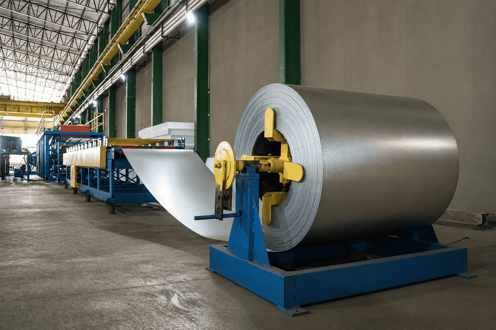
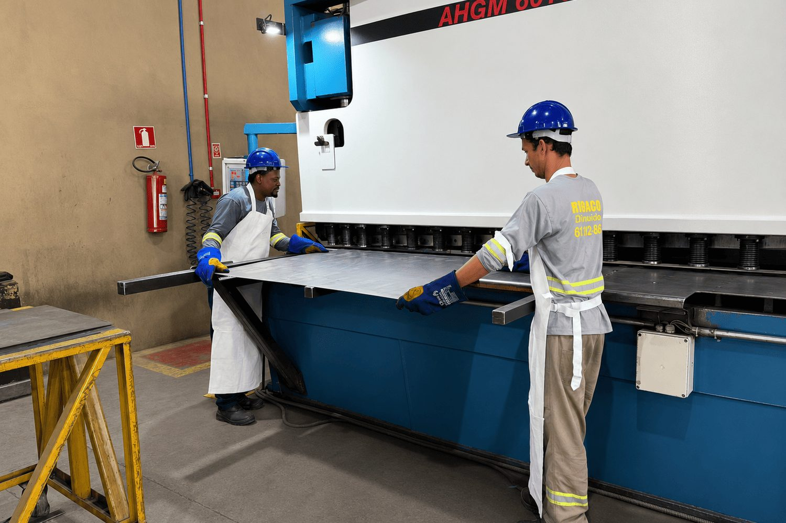
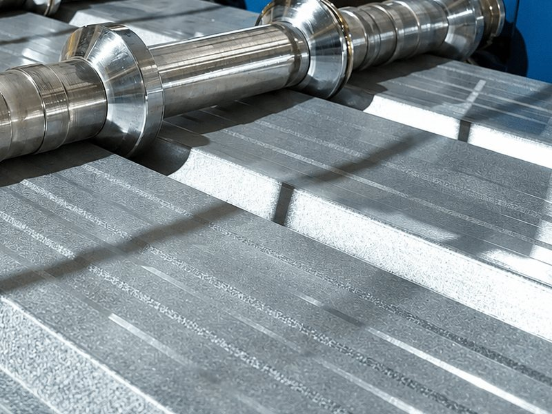
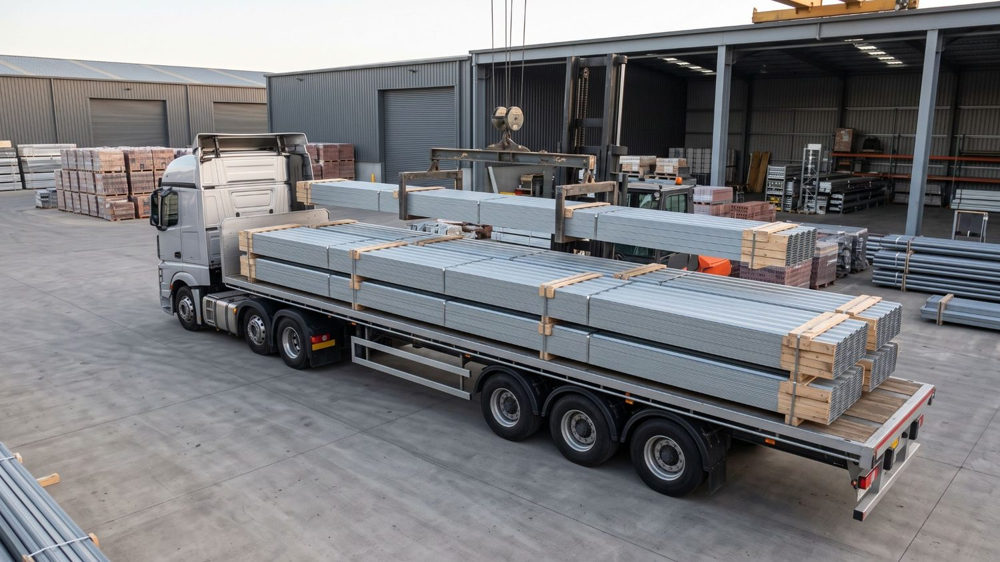
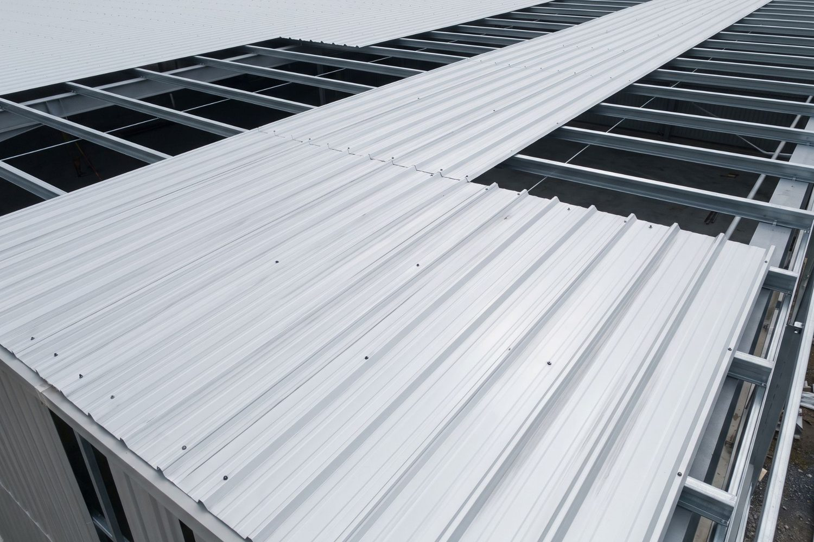

01
Telha no comprimento errado
Comprar telha em medida de prateleira obriga a emendar no meio da água. Cada emenda é uma sobreposição a mais, mais parafuso, mais vedação e mais um ponto por onde a água pode entrar depois.
Telha sanduíche, telha metálica simples em galvalume ou galvanizada, e todos os arremates no mesmo pedido: cumeeira, rufo, calha, terça e parafuso com vedação. A unidade de Rondonópolis produz a telha no comprimento que o seu projeto pede, e o orçamento volta com preço e prazo de produção.
1987
Grupo Vocical distribui material de construção desde
2005
Robracon em operação em Mato Grosso desde
11
Unidades do grupo em São Paulo e Mato Grosso
3
Unidades Robracon no estado de Mato Grosso
11
Itens na linha de cobertura, da telha ao parafuso
Quem fecha galpão, barracão ou telhado industrial em Mato Grosso conhece os quatro de sempre. Nenhum deles é sobre o preço do metro de telha.
01
Comprar telha em medida de prateleira obriga a emendar no meio da água. Cada emenda é uma sobreposição a mais, mais parafuso, mais vedação e mais um ponto por onde a água pode entrar depois.
02
A telha chega, mas falta a cumeeira. Acha o rufo, mas não tem o parafuso com arruela de vedação. O pedido vira três fornecedores, três notas e três conferências de recebimento para fechar uma cobertura só.
03
O projeto define perfil, espessura e largura útil. Quando o fornecedor manda o que tem em estoque no lugar do que foi pedido, a conta do telhado muda e o problema só aparece com a montagem já começada.
04
Cobertura é compra com data marcada. Orçamento que leva dias e ainda não diz o que está em estoque, o que é produzido sob medida e em quanto tempo, atrasa a montagem inteira.
Evite parar o serviço por falta de material. Solicite sua cotação.
Solicitar orçamentoCobertura é uma das cinco linhas da Robracon em Mato Grosso, e a unidade de Rondonópolis ainda produz telha metálica e termoacústica em comprimento personalizado.
Perfil de ondas retas, para galpão e vão maior.
Perfil de ondas curvas, para telhado menor e reforma.
Duas chapas com núcleo isolante. Também chamada de isotérmica.
Chapa em cima e isopor por baixo, sem a segunda chapa.
Fecha o encontro das duas águas no ponto mais alto.
Arremate no encontro da cobertura com a parede.
Recolhe a água do beiral, feita de bobina galvanizada.
Fecha o vão da onda no beiral e na cumeeira.
Perfil de apoio onde a telha é parafusada.
Autobrocante com arruela de EPDM, fixado na crista.
Matéria-prima de calha, rufo e arremate sob medida.
A produção de telha metálica e termoacústica sob medida fica na Robracon Rondonópolis. Cuiabá e Sinop atendem cobertura pelo comercial, e a disponibilidade de cada item é confirmada pelo vendedor na hora do orçamento.
Já tem o projeto ou a lista de material? Envie para a nossa equipe e receba sua cotação.
Solicitar orçamentoO mesmo produto tem nome diferente em cada região e em cada loja. Se você chegou procurando por um destes, está no lugar certo: aqui estão os nomes populares e o que cada um é de fato.
| Como costuma ser chamada | O que é de fato | O que muda na hora de comprar |
|---|---|---|
| Telha de zinco | É o nome popular da telha metálica. Telha de zinco puro praticamente não se usa mais: o que se vende hoje é chapa de aço com revestimento. | Você ainda precisa escolher o revestimento, galvanizado ou galvalume, e o perfil, trapezoidal ou ondulado. |
| Telha isotérmica | É a telha sanduíche: duas chapas com um núcleo isolante entre elas. | Escolher a espessura do núcleo e lembrar que o parafuso precisa ser mais comprido, para atravessar o painel inteiro. |
| Telha sanduíche | O mesmo que isotérmica e o mesmo que termoacústica. Três nomes para o mesmo painel. | Nada. Pode pedir por qualquer um dos três nomes que o vendedor entende. |
| Telha semi-sanduíche | A versão mais barata do painel: só a chapa de cima, com o isopor colado por baixo. Não tem a segunda chapa que fecha o conjunto. | Isola menos que a sanduíche inteira e deixa o núcleo à vista por dentro. Costuma resolver onde o forro entra depois. |
| Telha termoacústica | É o nome técnico da telha sanduíche, o que aparece em projeto e memorial. | É o termo que o projetista costuma usar. No balcão, sanduíche e isotérmica são a mesma coisa. |
| Telha galvalume | Não é um formato, é o revestimento da chapa: uma liga de alumínio e zinco. | Resiste mais à corrosão que o galvanizado comum. Vale para telha simples e para a chapa da sanduíche. |
| Telha galvanizada | Também é revestimento, só que de zinco puro, sem o alumínio do galvalume. | Costuma sair mais em conta que o galvalume e é a opção mais comum em telhado de menor porte. |
| Telha aluzinco | Outro nome comercial para o mesmo revestimento de alumínio e zinco do galvalume. | Nada. É sinônimo, muda só a marca que batizou. |
Resumindo: o formato é trapezoidal, ondulado ou sanduíche. O revestimento é galvanizado ou galvalume. E o comprimento é o que a Robracon Rondonópolis produz sob medida. Os três são escolhidos separadamente, e são esses três que você informa no pedido: formato, revestimento e comprimento.
Resolvido o nome, sobra a escolha do perfil, que é onde nasce a maior parte do retrabalho em cobertura metálica. Os três trabalham em situações diferentes e não se substituem entre si.
Onde o calor e o ruído incomodam.
Também chamada deTelha isotérmica ou termoacústica.
Galpões, indústria, casa caixote e vãos maiores.
Como reconhecerOndas retas, com crista e vale planos.
Telhados menores, reforma e uso rural.
Como reconhecerOndas curvas e contínuas, sem vale plano.
Existe ainda a semi-sanduíche: a chapa trapezoidal de cima com o núcleo de isopor colado por baixo, sem a segunda chapa que fecha o painel. Isola menos que a sanduíche inteira e deixa o núcleo à vista por dentro, o que costuma resolver onde vem forro depois. Sai mais em conta e entra no mesmo pedido.
Já tem o perfil e a medida do projeto? Mande a lista e receba a cotação.
Solicitar orçamento| Característica | Sanduíche | Trapezoidal | Ondulada |
|---|---|---|---|
| O que é | Painel com duas chapas e um núcleo isolante entre elas. | Chapa dobrada em ondas retas, com crista e vale planos. | Chapa conformada em ondas curvas e contínuas. |
| Outros nomes | Telha isotérmica, telha termoacústica, telha com isopor. | Telha TP, telha de zinco trapezoidal. | Telha de zinco ondulada. |
| Como identificar | O núcleo isolante aparece no corte da ponta. | O vale é plano e a crista é chata, com dobras marcadas. | A seção é uma onda contínua, sem trecho reto. |
| Onde entra | Onde o conforto térmico e acústico importa: indústria, comércio, ambiente de trabalho e galpão ocupado. | Galpão, barracão, indústria, centro logístico e vão maior entre apoios. | Telhado menor, reforma, edícula, área rural e cobertura de apoio. |
| Onde não entra | Onde o orçamento não comporta o painel e não há exigência de conforto. | Telhado com caimento abaixo da inclinação mínima do perfil. | Vão grande entre terças, onde o perfil não tem a mesma rigidez do trapezoidal. |
| Erro mais comum | Tratar como telha comum na hora de fixar, sem o parafuso do comprimento certo para atravessar o painel. | Usar em telhado sem caimento suficiente e ter retorno de água na sobreposição. | Esticar demais o vão entre terças e a telha trabalhar com flecha. |
| Rigidez entre apoios | Alta, porque o painel trabalha como conjunto. | Alta, por causa da altura da onda. | Menor que a do trapezoidal, pede terça mais próxima. |
Espessura, altura de onda, largura útil e inclinação mínima variam por perfil e por fabricante. Confira esses números no seu projeto e no memorial do perfil escolhido. No orçamento, a Robracon informa a largura útil e o comprimento do que produz.
A Robracon Rondonópolis produz telha metálica e termoacústica em comprimento personalizado. Em vez de emendar peças de medida fixa, a água sai inteira.


O comprimento máximo de produção e o prazo dependem da programação da unidade e do transporte até o local de entrega. Os dois são confirmados pelo vendedor no orçamento.
Esta página não publica tabela de preço, e a razão é honesta: a mesma telha tem valores diferentes conforme o que você escolhe. O que dá para fazer aqui é mostrar o que mexe no preço, para você comparar orçamento com orçamento e não se perder.
| O que você escolhe | Como mexe no preço |
|---|---|
| Formato | A sanduíche custa mais que a telha simples, porque são duas chapas e o núcleo isolante. Entre trapezoidal e ondulada a diferença é menor. |
| Espessura da chapa | É o item que mais pesa. Chapa mais grossa custa mais e aguenta vão maior entre terças. Comparar preço sem comparar espessura não diz nada. |
| Revestimento | Galvalume costuma custar mais que galvanizado, e entrega mais resistência à corrosão. |
| Comprimento | Telha produzida sob medida evita emenda e sobra. Sai mais material aproveitado, mesmo quando o metro parece igual. |
| Volume | Quanto maior a compra, melhor a condição negociada. Para revenda e construtora, é aqui que a conta muda de fato. |
| Arremates | Cumeeira, rufo, calha, tapa-onda e parafuso entram no orçamento. Preço de telha sem eles não é o custo da sua cobertura. |
Sobre "preço por metro": cuidado ao comparar. Cada perfil tem uma largura útil diferente, então o metro de uma telha não cobre a mesma área que o metro de outra. O que compara de verdade é o preço por metro quadrado coberto, já com a sobreposição descontada. É essa conta que o vendedor faz junto com você.
Mande as medidas e receba o preço fechado, com telha e arremates na mesma conta.
Solicitar orçamentoColoque as medidas do vão e veja o comprimento de cada telha e a lista de material. Serve para conferir o que o projeto já diz, ou para chegar a um número quando não há projeto. No fim, dá para mandar a lista inteira junto com o pedido de orçamento.
Estimativa de material
0telhas
Preencha as medidas para ver a lista de material.
Estimativa para orientar o orçamento. Não substitui o projeto nem o memorial do fabricante. A margem de perda entra nos acessórios e não na telha, que é produzida na medida. Quem já tem projeto deve conferir o resultado contra ele.
01
Preenche o formulário com nome, contato e cidade. Se já usou a calculadora, a lista de material vai junto.
02
O retorno diz o que está em estoque, qual a largura útil do perfil e o que entra na produção sob medida.
03
Preço conforme o volume, condição de pagamento e o prazo de produção quando a telha for no comprimento do projeto.
04
Telha comprida pede transporte pensado. Você acerta com o vendedor como o material vai chegar até você.
O atendimento é B2B. Se você se identifica com dois itens de qualquer uma das listas abaixo, o orçamento vale a pena.


Robracon Rondonópolis, MTA Robracon é uma unidade do Grupo Vocical. O grupo distribui materiais de construção desde 1987, quando começou em Votuporanga, no interior de São Paulo, com cimento e cal, e foi agregando aço, drywall e coberturas ao portfólio.
A Robracon Rondonópolis foi constituída em 2004 e iniciou as atividades em 2005. Hoje é a unidade de portfólio mais amplo do grupo, atendendo revendas, construtoras, indústrias, serralherias e estruturas metálicas, e é a que produz telha metálica e termoacústica em comprimento sob medida.


Fabricantes que abastecem as diferentes linhas de produto. A marca de cada item do seu pedido é confirmada no orçamento.

Endereço: Av. Josefa Machado de Rezende, 2999, Parque Sagrada Família, Rondonópolis, MT
Telefone: (66) 3422-8878
E-mail: vendas.robracon@grupovocical.com.br
Unidade matriz da Robracon e a que produz telha metálica e termoacústica em comprimento personalizado, além de fazer corte e dobra de chapas.
Solicitar orçamentoEndereço: Rua B, 818, Distrito Industrial, Cuiabá, MT
Telefone: (65) 3666-0332
E-mail: vendas.robracon@grupovocical.com.br
Atende pedidos de cobertura pelo comercial. A disponibilidade de cada item e a forma de retirada ou entrega são combinadas com o vendedor.
Solicitar orçamentoEndereço: R. João Pedro Moreira de Carvalho, 2357, Jardim Jacarandás, Sinop, MT
Telefone: (66) 3029-9659
E-mail: vendas.robracon@grupovocical.com.br
Atende pedidos de cobertura pelo comercial. A disponibilidade de cada item e a forma de retirada ou entrega são combinadas com o vendedor.
Solicitar orçamentoPrecisa complementar o pedido?
A Robracon também fornece telha de fibrocimento e telha translúcida, além de aço, materiais de construção, perfis para estruturas metálicas e drywall.
Diga o que você precisa e a sua cidade. O contato vai para a Robracon, e o orçamento volta com a telha, os arremates e o prazo de produção quando for sob medida.
ROBRACON RONDONÓPOLIS BRASIL MATERIAIS P/ CONSTRUÇÃO LTDA · CNPJ 06.937.383/0001-05
Av. Josefa Machado de Rezende, 2999, Parque Sagrada Família, Rondonópolis, MT · (66) 3422-8878
Informações para especificação, montagem e quantitativo.
Terça no vão certo, sobreposição na medida do perfil, parafuso na crista e arremate em cada encontro. É isso que separa uma cobertura que dura de uma que goteja no primeiro ano.
A fixação vai na crista da onda, nunca no vale.
| Componente | Função | Onde entra | O que observar |
|---|---|---|---|
| Terça | Apoia a telha e transfere a carga para a estrutura. | Atravessada sob a telha, no sentido do comprimento da construção. | O vão entre terças é o que define se a telha trabalha sem flecha. |
| Parafuso autobrocante | Prende a telha na terça e veda o furo. | Sempre na crista da onda, nunca no vale, onde a água corre. | A arruela de vedação em EPDM é o que impede a infiltração pelo furo. |
| Sobreposição lateral | Une uma telha à seguinte no sentido da largura. | Entre chapas vizinhas, encaixando uma onda sobre a outra. | É por isso que a largura útil é menor que a largura total da telha. |
| Cumeeira | Fecha o encontro das duas águas. | No ponto mais alto, lapeando sobre a telha dos dois lados. | O consumo sai do comprimento da construção, não da área do telhado. |
| Rufo | Arremata o encontro da cobertura com a parede. | Onde a telha morre contra alvenaria ou platibanda. | Sem ele, o encontro com a parede vira o ponto de entrada de água. |
| Calha | Recolhe e conduz a água que desce da cobertura. | No beiral, ao longo de todo o comprimento de cada água. | Sai de bobina galvanizada, e a seção acompanha a área de captação. |
| Tapa-onda | Fecha o vão que sobra embaixo da onda. | No beiral e na cumeeira, acompanhando o desenho do perfil. | É o que barra entrada de pássaro, inseto e chuva de vento. |

Quem tem projeto já recebe a quantidade pronta nele. Isto aqui é para conferir esse número, ou para levantar um orçamento inicial em telhado menor, reforma e casa caixote, onde nem sempre existe projeto.
| Item | De onde sai a conta | Referência |
|---|---|---|
| Área de cobertura | Comprimento da construção pelo comprimento de rampa de cada água. | A rampa é sempre maior que a projeção horizontal, por causa do caimento. |
| Comprimento de cada telha | Largura da água multiplicada pelo fator da inclinação, mais o beiral. | Com 10 por cento de inclinação, a rampa fica cerca de 0,5 por cento maior que o vão. |
| Número de telhas | Comprimento da construção dividido pela largura útil da telha. | A largura útil é menor que a total, porque uma onda vai na sobreposição. |
| Terças | Número de linhas pelo comprimento da construção, em cada água. | O número de linhas sai do vão entre apoios que o perfil aguenta. |
| Parafuso com vedação | Por metro quadrado de cobertura, conforme o número de terças. | Ordem de 6 a 8 unidades por metro quadrado, a confirmar com o vendedor. |
| Cumeeira | Comprimento da construção, quando a cobertura tem duas águas. | Sai em metros lineares, não em área. |
| Calha | Comprimento do beiral de cada água. | Também em metros lineares, e a seção acompanha a área de captação. |
| Rufo | Metros de encontro da cobertura com parede ou platibanda. | Depende do projeto, então entra no orçamento caso a caso. |
| Tapa-onda | Número de ondas ao longo do beiral e da cumeeira. | Uma peça por onda, nos dois extremos de cada água. |
Valores de referência de mercado para estimativa, que não substituem o projeto nem o memorial do fabricante. Some a perda do seu serviço e confira o quantitativo contra o projeto antes de fechar o pedido.
São. Telha sanduíche, telha isotérmica e telha termoacústica são três nomes para o mesmo produto: um painel formado por duas chapas metálicas com um núcleo isolante entre elas. Termoacústica é o nome técnico, o que costuma aparecer em projeto; sanduíche e isotérmica são os nomes de balcão. Pode pedir por qualquer um dos três.
Telha de zinco é o nome popular da telha metálica. Telha de zinco puro praticamente não se fabrica mais: o que se vende hoje é chapa de aço com revestimento, que pode ser galvanizado, de zinco, ou galvalume, de alumínio e zinco.
Então quem procura telha de zinco em geral quer telha metálica, e ainda vai escolher duas coisas: o revestimento e o formato, trapezoidal ou ondulado.
Não existe um preço único, e quem publica um número redondo costuma estar falando de uma espessura específica que talvez não seja a sua. O valor depende do formato, da espessura da chapa, do revestimento, do comprimento e do volume da compra.
Um cuidado na hora de comparar: cada perfil tem uma largura útil diferente, então o metro de uma telha não cobre a mesma área que o metro de outra. O que compara de verdade é o preço por metro quadrado coberto, já com a sobreposição descontada. Mande as medidas pelo formulário e o vendedor devolve o orçamento com telha e arremates na mesma conta.
A unidade de Rondonópolis produz telha metálica e termoacústica em comprimento personalizado, então a medida sai conforme o pedido em vez de sair de uma lista fixa. É o que evita emendar a água no meio quando o vão não bate com a medida de prateleira.
O comprimento máximo de produção e o prazo dependem da programação da unidade e do transporte até o local de entrega, e são confirmados pelo vendedor no orçamento.
Galvalume é o nome do revestimento: uma liga de alumínio e zinco aplicada sobre a chapa de aço. A telha galvalume é a telha metálica feita com essa chapa. O revestimento é o que dá a resistência à corrosão, e o perfil, trapezoidal ou ondulado, é o que dá a rigidez.
A diferença está no revestimento da chapa. A galvanizada é revestida de zinco, e a galvalume é revestida de uma liga de alumínio e zinco. Na prática, a galvalume tem desempenho melhor contra corrosão e aparência um pouco mais clara. O formato da telha, trapezoidal ou ondulada, é escolhido separadamente do revestimento.
Sim. A Robracon fornece coberturas metálicas em Mato Grosso, com telha galvalume trapezoidal, ondulada e termoacústica, mais cumeeira, rufo, calha, tapa-onda, terça e parafuso com vedação. A unidade de Rondonópolis ainda produz telha em comprimento personalizado.
Sim. A Robracon Rondonópolis produz telha metálica e termoacústica no comprimento definido pelo pedido. É o que evita emendar a água no meio: a peça sai do tamanho que vai subir no telhado, com menos sobreposição, menos parafuso e menos ponto de infiltração.
O comprimento máximo de produção e o prazo dependem da programação da unidade e do transporte até o local de entrega, e são confirmados pelo vendedor no orçamento.
É o desenho da seção. A trapezoidal tem ondas retas, com crista e vale planos, e por ter onda mais alta ganha rigidez, o que permite vão maior entre as terças. A ondulada tem ondas curvas e contínuas, é mais usada em telhado menor, reforma e área rural, e costuma pedir terça mais próxima.
Na maioria dos galpões a escolha é a trapezoidal, porque a onda mais alta dá rigidez e permite vão maior entre apoios, o que reduz a quantidade de terça. Quando o galpão precisa de conforto térmico ou acústico, como em indústria e ambiente de trabalho, a termoacústica passa a fazer sentido.
É um painel tipo sanduíche: uma chapa trapezoidal em cima, um núcleo isolante no meio e uma chapa lisa embaixo. O núcleo é o que reduz a passagem de calor e de ruído. Ela se monta como uma telha comum, mas a fixação pede parafuso do comprimento certo para atravessar o painel inteiro.
A sanduíche tem duas chapas metálicas com o núcleo isolante entre elas. A semi-sanduíche tem só a chapa de cima, com o isopor colado por baixo, sem a segunda chapa que fecharia o painel.
Na prática a semi isola menos e deixa o núcleo à vista por dentro, então costuma ser usada onde entra forro depois ou onde o acabamento interno não aparece. Em compensação sai mais em conta. As duas saem no mesmo pedido, junto com os arremates.
Depende do perfil. Cada fabricante define a inclinação mínima do seu perfil, e ela varia conforme a altura da onda e o comprimento da água: água mais comprida costuma pedir mais caimento. Telha ondulada em geral pede mais inclinação que a trapezoidal.
Como esse número muda de perfil para perfil, confirme a inclinação mínima no memorial do fabricante do perfil que você vai comprar. Especificar abaixo do mínimo é o que faz a água voltar pela sobreposição.
A largura total é a medida da chapa. A largura útil é o que de fato cobre depois de descontar a onda que vai na sobreposição lateral com a telha vizinha. Para calcular a quantidade de telhas você usa a largura útil, nunca a total, senão o material falta.
Primeiro ache o comprimento de rampa, que é a largura de cada água corrigida pela inclinação, mais o beiral. Esse é o comprimento de cada telha. Depois divida o comprimento da construção pela largura útil da telha e arredonde para cima: esse é o número de telhas por água.
A calculadora desta página faz essa conta e ainda estima terça, parafuso, cumeeira e calha a partir das medidas reais.
Porque ela desce pela inclinação. A medida do vão é a projeção horizontal, e a telha percorre a hipotenusa. Contar pela projeção é o erro clássico que faz faltar material com a montagem já começada.
Na crista. O vale é por onde a água corre, então furo no vale é infiltração garantida. O parafuso é autobrocante e leva arruela com vedação em EPDM, que é o que fecha o furo na crista.
A linha inteira. Cumeeira, rufo, calha, tapa-onda, terça e parafuso com vedação saem do mesmo pedido, o que evita fechar a compra em três fornecedores diferentes e descobrir a falta de um item com a equipe já no telhado.
A unidade de Rondonópolis trabalha com bobina galvanizada e faz corte e dobra de chapas, que é de onde saem calha, rufo e arremates. A medida e o desenho da peça são combinados com o vendedor no orçamento.
A Robracon tem três unidades no estado: Rondonópolis, Cuiabá e Sinop. A produção de telha sob medida está em Rondonópolis. Cuiabá e Sinop atendem cobertura pelo comercial, e a disponibilidade de cada item é confirmada pelo vendedor no orçamento.
O atendimento é preparado para B2B: revendas, construtoras, indústrias e prestadores de serviço que compram em volume. Fale com o vendedor para confirmar a sua situação.
Sim. Revenda de material de construção é o perfil principal de cliente do Grupo Vocical, que atua como distribuidor desde 1987.
Sim. São cinco linhas: material de construção, aço para construção civil, estruturais e serralheria, coberturas e drywall. A unidade de Rondonópolis também faz corte e dobra de chapas.
O Grupo Vocical distribui materiais de construção desde 1987, quando começou em Votuporanga, São Paulo, com cimento e cal. Hoje são 11 unidades em São Paulo e Mato Grosso, sob as marcas Vocical, Jacical, Ello Forte, Rio Preto Cimento e Cal, Robracon e as distribuidoras de Itu, Piracicaba e Itapetininga.
Para quem compra, revende ou orça e precisa falar a mesma língua do vendedor.